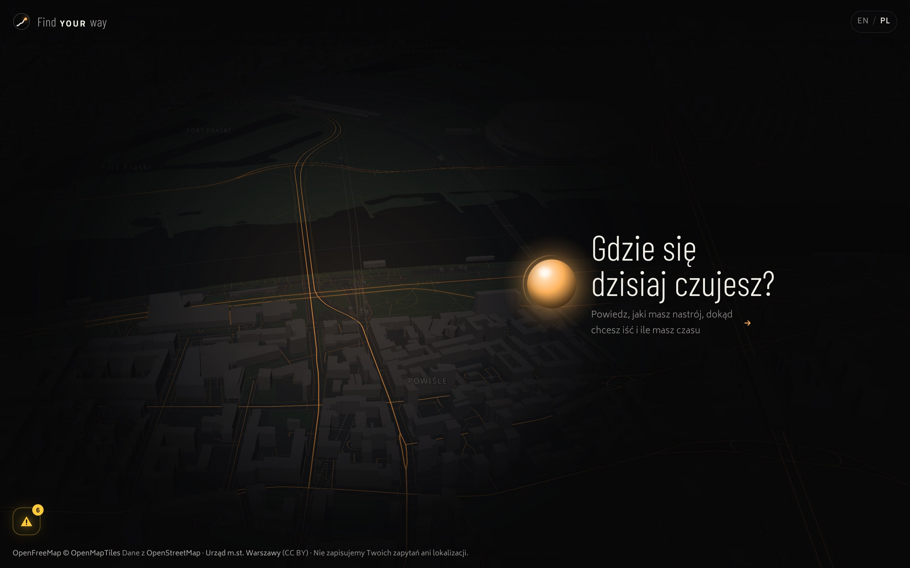
Warsaw Open Data Hackathon 2026 · Wyzwanie 1: Warszawa 2076
Find YOUR way
Nawigacja, która zna najlepszą drogę dla ciebie. A miasto rozświetla się, żeby ci ją pokazać.
W tle: prawdziwy ekran startowy aplikacji · mapa © OpenStreetMap, OpenFreeMap
Kiko
twój przewodnik po mieście
Poznaj Kiko
Nawigacja zna najkrótszą drogę. Kiko zna twoją.
Napisz albo powiedz Kiko, dokąd chcesz iść albo jak się czujesz. Kiko rozświetla twoją drogę przez miasto.
- 01
Mówisz, dokąd albo jak się czujesz
- 02
Kiko wybiera trasę z otwartych danych
- 03
Miasto rozświetla się wzdłuż twojej drogi
Bo żyjemy w „wirtualnej bliskości i fizycznej samotności” (Infuture Institute, Natalia Hatalska). Kiko daje powód, żeby wyjść.
Różne nastroje · kliknij
Różne nastroje, różne światła.
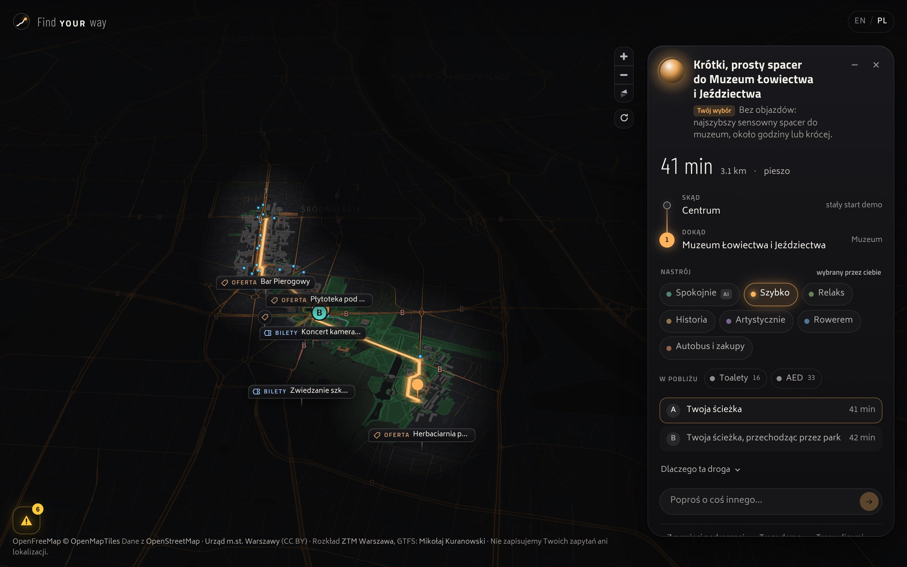
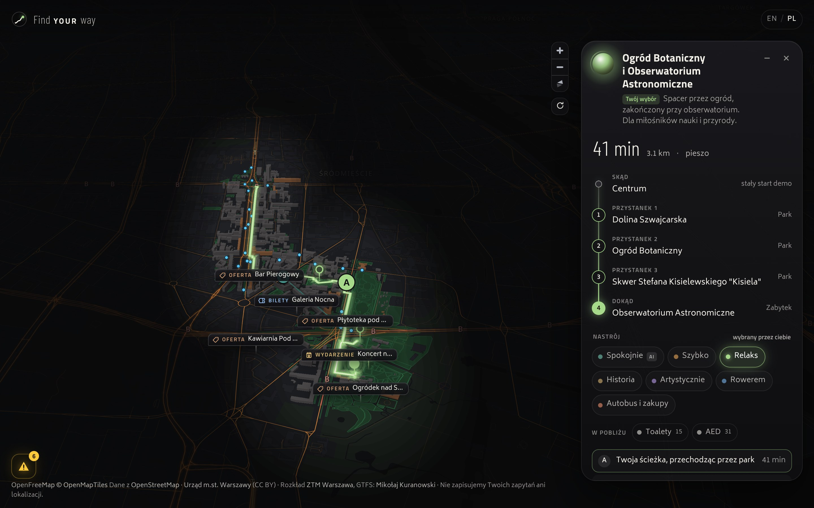
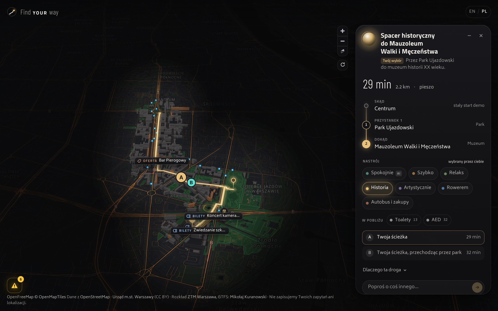
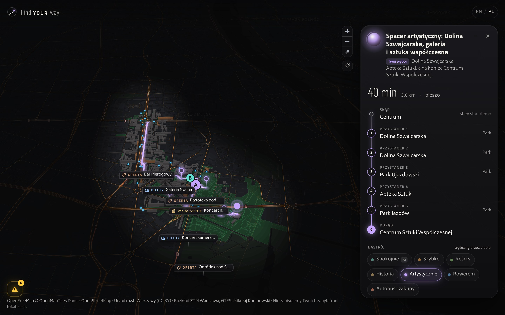
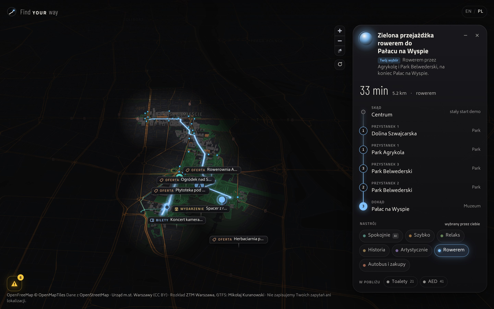
Prawdziwy ekran · to samo pytanie, inny nastrójTak to wygląda
- Kula pyta o nastrój
- Trasa rysuje się ulicami
- Miasto rośnie wzdłuż drogi
- Inny nastrój, inna trasa
Co widzisz po drodze · kliknij
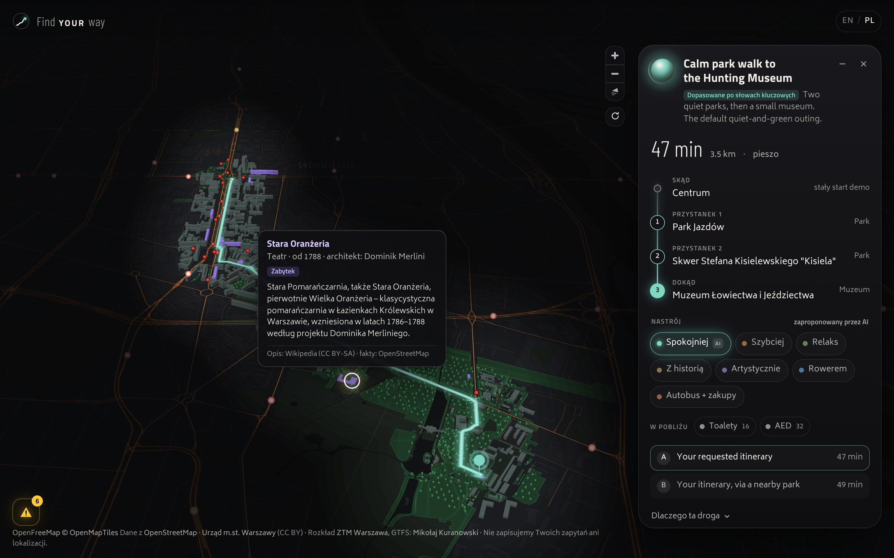
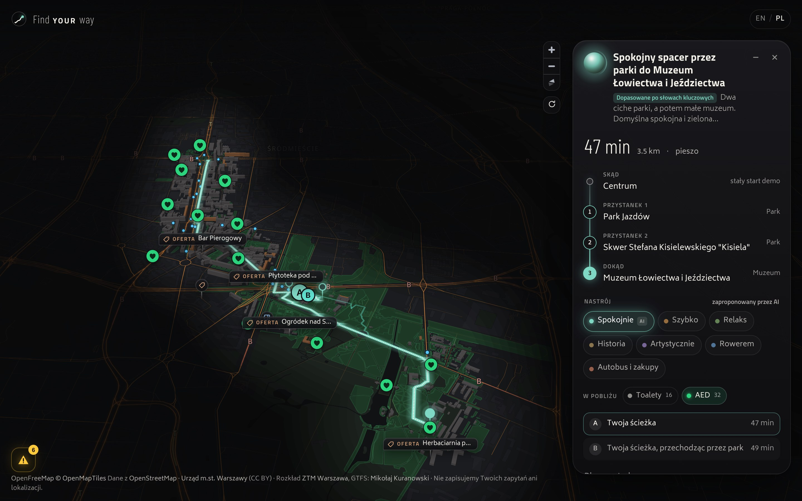
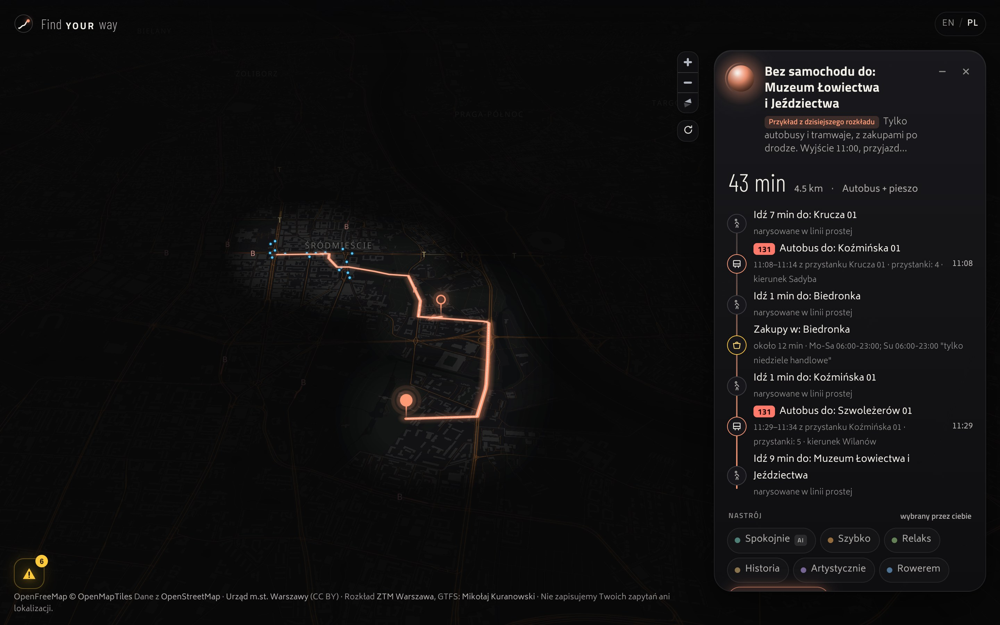
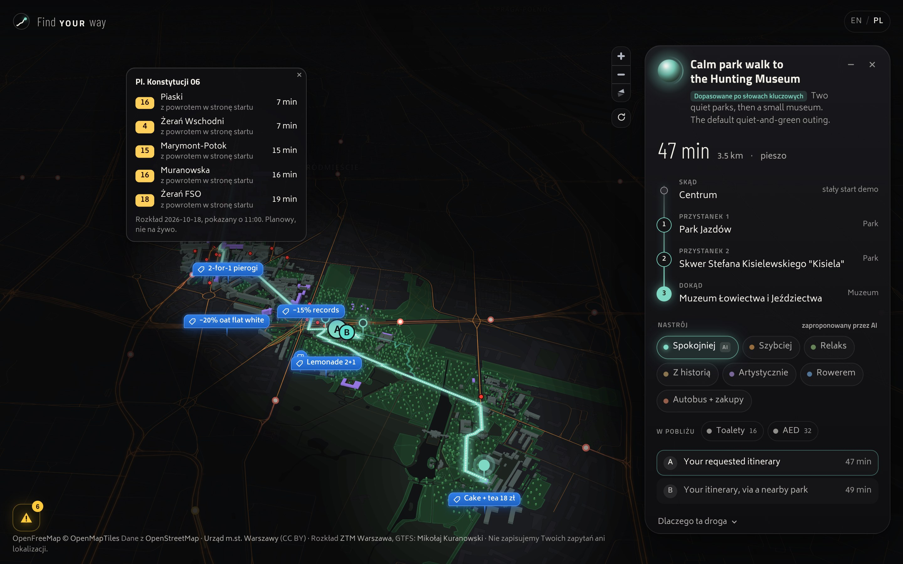
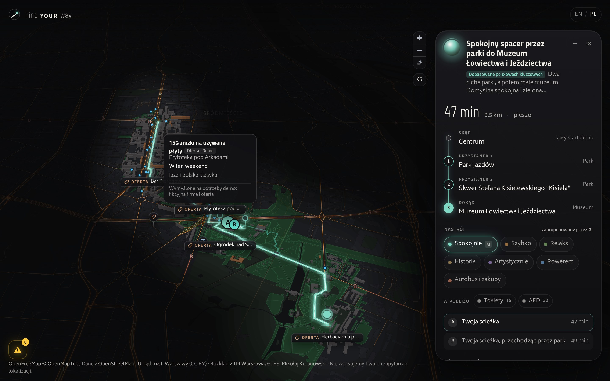
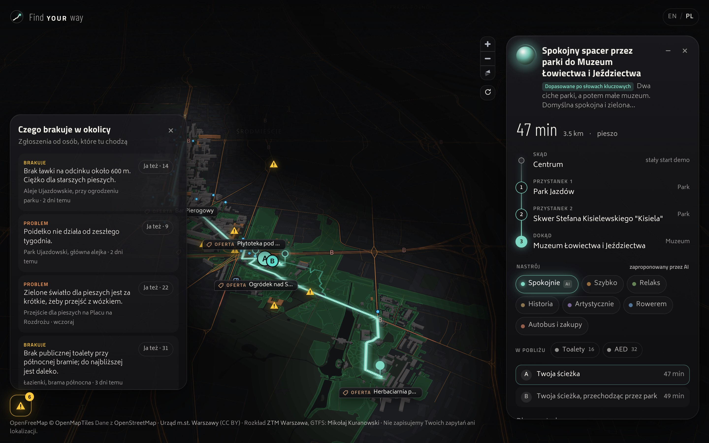
Prawdziwy ekranKomputer i telefon
Ta sama droga, na każdym ekranie.
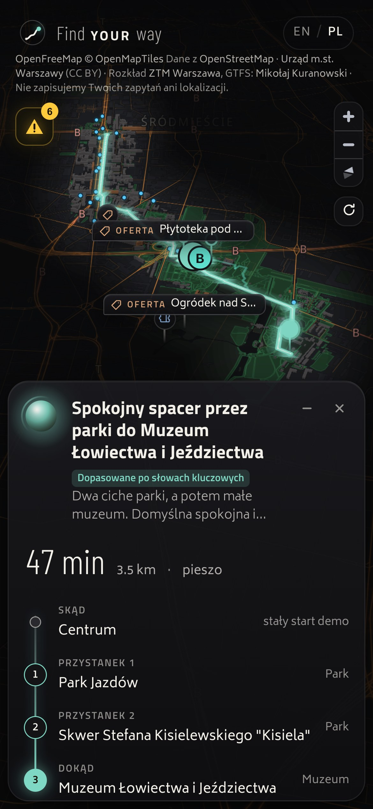
Na telefonie mapa jest u góry, a trasa wysuwa się od dołu, pod kciukiem.
Oba ekrany to nagrania z działającej aplikacji
Prawdziwy ekran: flaga z ofertą przy trasie, podpisana „Oferta · Demo”.
Dla firm i wydarzeń
Reklama, która nie śledzi.
- WizjaFirma albo organizator dodaje ofertę lub wydarzenie: miejsce, godziny, nastrój, do którego pasuje.
- Działa dziśKiko pokazuje flagę tylko na trasach obok i przy pasującym nastroju. Nie na podstawie profilu, bo profili nie mamy.
- Działa dziśZawsze podpisane: „Oferta”, „Wydarzenie”, prawdziwe albo demo.
- WizjaFirma widzi tylko zbiorcze liczby, nigdy dane konkretnej osoby. Wydarzenia z kalendarza miasta za darmo, małe firmy za stałą, niską opłatę, bez licytacji o pozycję.
Przykład: pracownia ceramiki w Grodzisku Mazowieckim ma puste miejsca w sobotę. Kiko pokazuje jej warsztaty osobom z Warszawy, które szukają „czegoś do zrobienia rękami”, i prowadzi je tam kolejką WKD.
Otwarte dane Warszawy, których używamy
Dane miasta na każdym kroku trasy.
0
kursów w rozkładzie ZTM
GTFS z 18 października: autobusy i tramwaje przy trasie, odjazdy z 69 przystanków, trasa bez samochodu.
W aplikacji0
wydarzeń z kalendarza miasta
352 mają punkt na mapie. Prawdziwe wydarzenie pojawia się przy trasie jako flaga.
W aplikacji0
defibrylatorów AED
Cała Warszawa, jako warstwa w naszym API i dla agentów AI przez MCP.
API i MCP0
toalet publicznych
Cała Warszawa, w API i MCP. Przy samej trasie dokładamy toalety z OpenStreetMap.
API i MCP0
stacji jakości powietrza
Odczyty z całego miasta w API i MCP. Następny krok: trasa, która omija smog.
API i MCP0
otwartych boisk
Pobrane z portalu. Czekają na zamianę adresów na punkty na mapie.
Pobrane2022
mapy hałasu (WMS)
Hałas drogowy, kolejowy, tramwajowy i lotniczy, w dzień i w nocy. Zastąpią nasz szacunek ciszy.
Następny krok1935
mapy historyczne (WMS)
Lata 1935, 1939 i 1945 nałożone na dzisiejsze miasto. Przetestowane w aplikacji.
Przetestowane
Urząd m.st. Warszawy · dane.um.warszawa.pl (CC BY)wms.um.warszawa.plZTM Warszawa (GTFS)pobrane 17–18.10.2026
Sześć przykładów, wbudowanych w aplikację · kliknij
Sześć osób. Sześć świateł.
Postacie są fikcyjne, trasy są prawdziwe: każdy prompt uruchamia jedną z sześciu tras wbudowanych w aplikację, także bez AI.
Przykład 1 z 6 · Spokojnie
Kuba potrzebuje ciszy, nie tłumu.
KKuba, 27
pracuje w Centrum · postać fikcyjna
Lęk przed tłumem. Po pracy chce się wyciszyć, ale hałas i ludzie go paraliżują. Nikogo nie zapyta o drogę.
Cichy, zielony park i małe muzeumpisze do Kiko
Trasa Kiko47 min · 3,5 km · pieszoDziała dziś
Centrum→Park Jazdów→Skwer Stefana Kisielewskiego "Kisiela"→Muzeum Łowiectwa i Jeździectwa
WizjaPora, kiedy w parku jest pusto, i wyjście awaryjne: jedno dotknięcie i najspokojniejsza droga do domu.
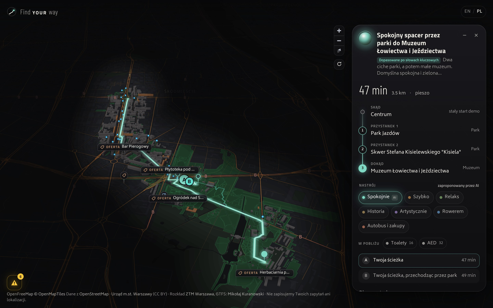
Nagranie z aplikacji: wpisany prompt, trasa KikoOtwórz na żywo w aplikacji ↗wpisz: „Cichy, zielony park i małe muzeum”. Działa także bez AI, po słowach kluczowych.
Przykład 2 z 6 · Historia
Lena chce zrozumieć historię miasta.
LLena, 29
turystka z Krakowa · postać fikcyjna
Pierwszy raz w Warszawie. Nie chce tylko Starego Miasta: chce zobaczyć miejsca pamięci i zrozumieć, co tu się wydarzyło.
Historia i pamięć Warszawypisze do Kiko
Trasa Kiko29 min · 2,2 km · pieszoDziała dziś
Centrum→Park Ujazdowski→Mauzoleum Walki i Męczeństwa
WizjaPotem PRL po drodze: bar mleczny i Muzeum Neonów, z kartą historii każdego budynku.
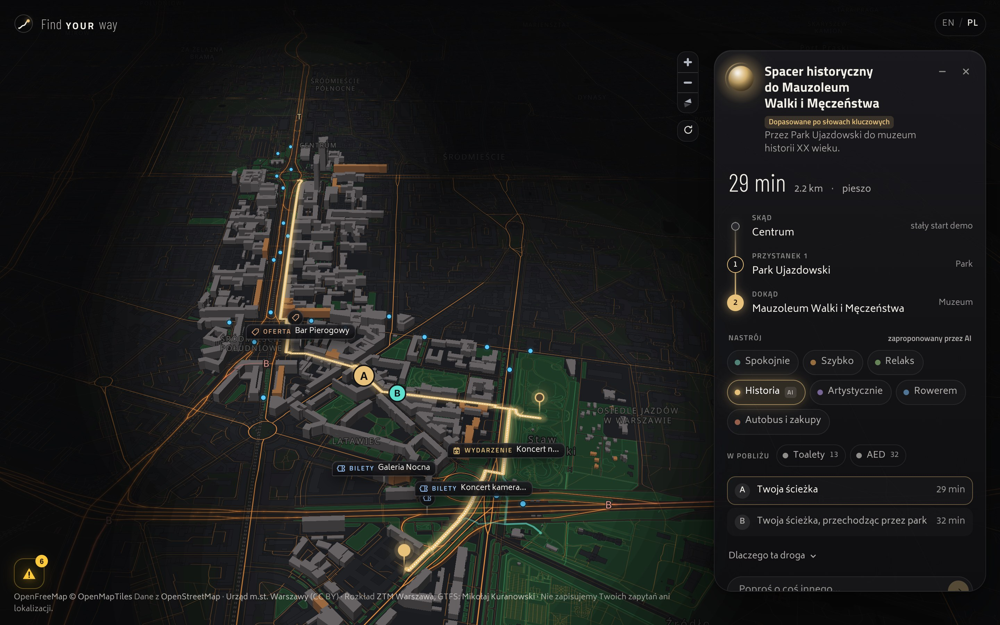
Nagranie z aplikacji: wpisany prompt, trasa KikoOtwórz na żywo w aplikacji ↗wpisz: „Historia i pamięć Warszawy”. Działa także bez AI, po słowach kluczowych.
Przykład 3 z 6 · Artystycznie
Zuza i Maja szukają sztuki na dziś.
ZZuza i Maja, 22
Mokotów · postać fikcyjna
Kochają sztukę i vintage, ale nie wiedzą, gdzie dziś jest coś ciekawego. Nie mają auta i chcą z tego zrobić cały dzień.
Sztuka, galeria i wystawapisze do Kiko
Trasa Kiko40 min · 3,0 km · pieszoDziała dziś
Centrum→Dolina Szwajcarska→Park Ujazdowski→Apteka Sztuki→Park Jazdów→Centrum Sztuki Współczesnej
WizjaPotem lumpeksy na Pradze i sushi po drodze, w jednym planie z metrem i tramwajem.
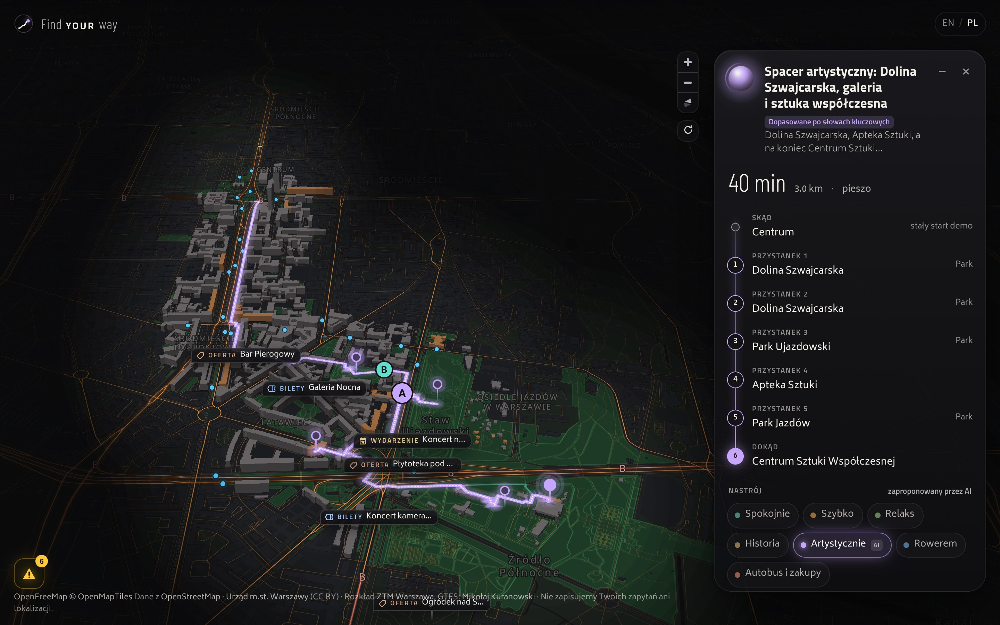
Nagranie z aplikacji: wpisany prompt, trasa KikoOtwórz na żywo w aplikacji ↗wpisz: „Sztuka, galeria i wystawa”. Działa także bez AI, po słowach kluczowych.
Przykład 4 z 6 · Rowerem
Marek i Zosia jadą rowerem przez parki.
MMarek, 41, i Zosia, 8
weekend bez auta · postać fikcyjna
Zosia dopiero uczy się jeździć, więc tylko spokojne alejki. Marek chce zostawić auto w domu.
Przejażdżka rowerem przez zieleńpisze do Kiko
Trasa Kiko33 min · 5,2 km · roweremDziała dziś
Centrum→Park Agrykola→Park Belwederski→Pałac na Wyspie
WizjaTrasa omija ruchliwe ulice, a na końcu czeka oferta lokalnej lodziarni, oznaczona jako oferta.
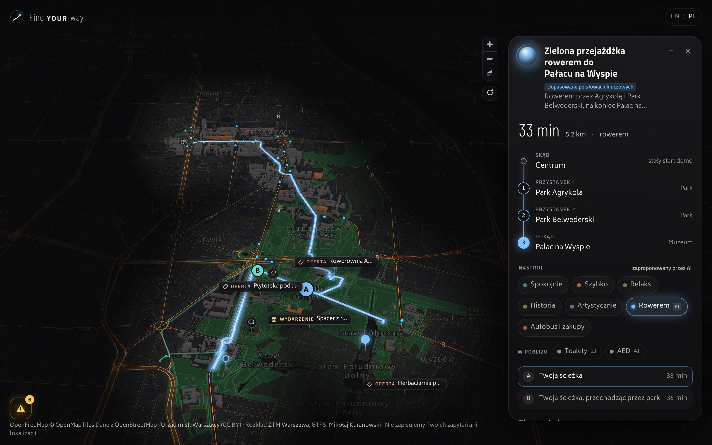
Nagranie z aplikacji: wpisany prompt, trasa KikoOtwórz na żywo w aplikacji ↗wpisz: „Przejażdżka rowerem przez zieleń”. Działa także bez AI, po słowach kluczowych.
Przykład 5 z 6 · Szybko
Tomek ma tylko godzinę.
TTomek, 35
godzina przerwy · postać fikcyjna
Między spotkaniami siedzi cały dzień przy biurku. Chce się przejść, ale bez kluczenia i bez spóźnienia.
Krótki i szybki spacer, mam godzinępisze do Kiko
Trasa Kiko41 min · 3,1 km · pieszoDziała dziś
Centrum→Muzeum Łowiectwa i Jeździectwa
WizjaKiko pilnuje czasu i przypomni o powrocie, zanim zacznie się następne spotkanie.
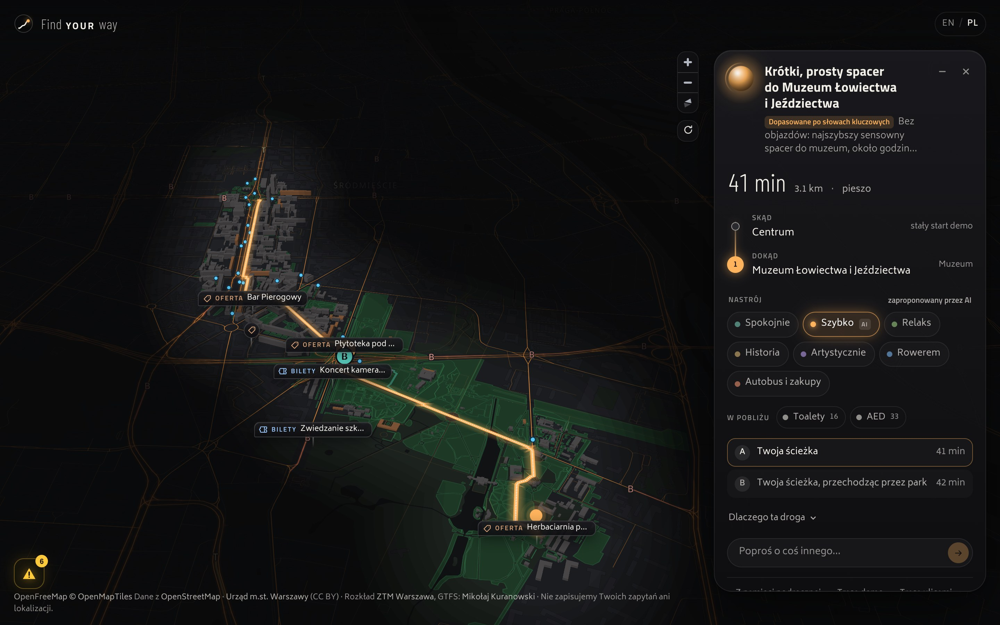
Nagranie z aplikacji: wpisany prompt, trasa KikoOtwórz na żywo w aplikacji ↗wpisz: „Krótki i szybki spacer, mam godzinę”. Działa także bez AI, po słowach kluczowych.
Przykład 6 z 6 · Relaks
Halina chce wyjść do zieleni i do ludzi.
HHalina, 76
Ochota · postać fikcyjna
Mieszka sama, bywają dni bez jednej rozmowy. Boi się długiej drogi bez ławki, żeby odpocząć.
Ogród botaniczny i obserwatoriumpisze do Kiko
Trasa Kiko41 min · 3,1 km · pieszoDziała dziś
Centrum→Dolina Szwajcarska→Ogród Botaniczny→Skwer Stefana Kisielewskiego "Kisiela"→Obserwatorium Astronomiczne
WizjaŁawki i defibrylatory po drodze, studentka z sąsiedztwa jako towarzyszka i najbliższe zajęcia dla seniorów.
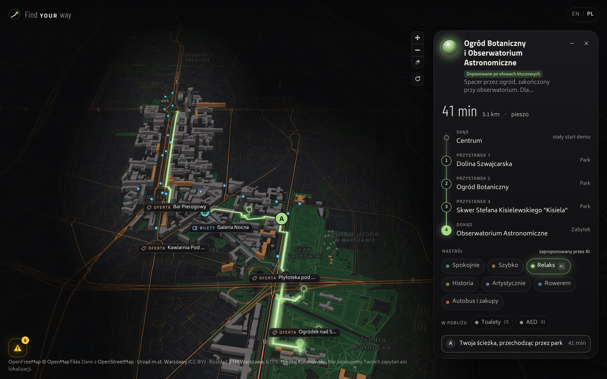
Nagranie z aplikacji: wpisany prompt, trasa KikoOtwórz na żywo w aplikacji ↗wpisz: „Ogród botaniczny i obserwatorium”. Działa także bez AI, po słowach kluczowych.
Co to zmienia · dziś i w przyszłości
Nie kolejna mapa, tylko miasto, które rozmawia z ludźmi.
01Eko
Bez auta: rower, autobus i zakupy w jednym planie. Mniej korków i spalin.
02Seniorzy
Ławki, defibrylatory, młody towarzysz i najbliższe zajęcia dla seniorów.
03Zdrowie
Spacer jako codzienny nawyk: ruch, zieleń i cisza zamiast hałasu.
04Kultura
Historia każdego budynku na trasie, galerie, muzea i wydarzenia miasta.
Gdzie się dzisiaj czujesz?
Dziś: spacer, który pasuje do nastroju. W 2076: sposób, w jaki Warszawa i całe Mazowsze rozmawiają z mieszkańcami, żebyśmy znów spotykali się w prawdziwym mieście.
- Delta@Delta-43
- Sonia@zoey-so
- Alban@kaveOO
- Ola@unicorn-alex
- Aryna@Rysia
github.com/Delta-43/1_ft_ddos_waw_open_data_hackathon